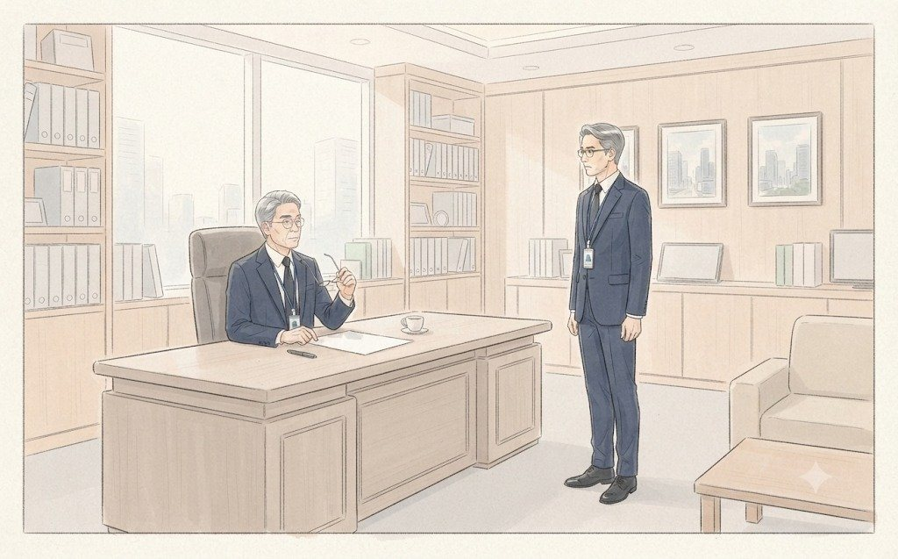
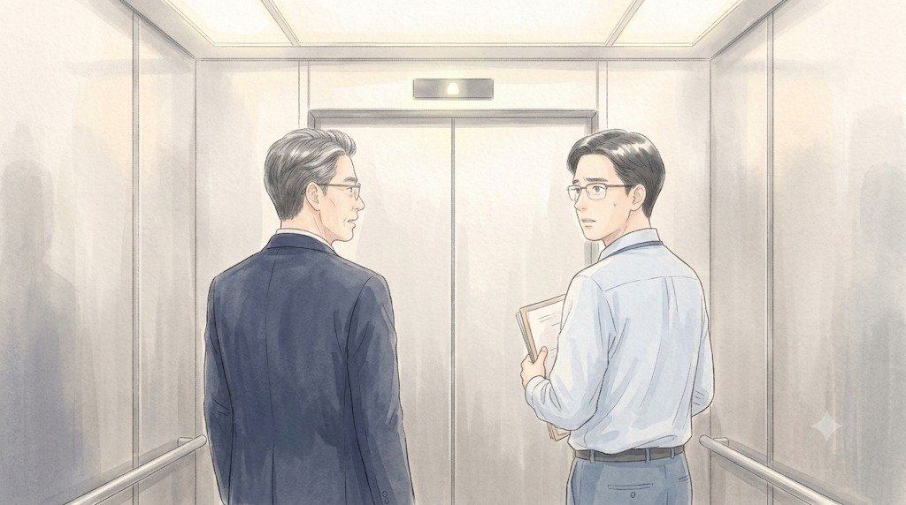
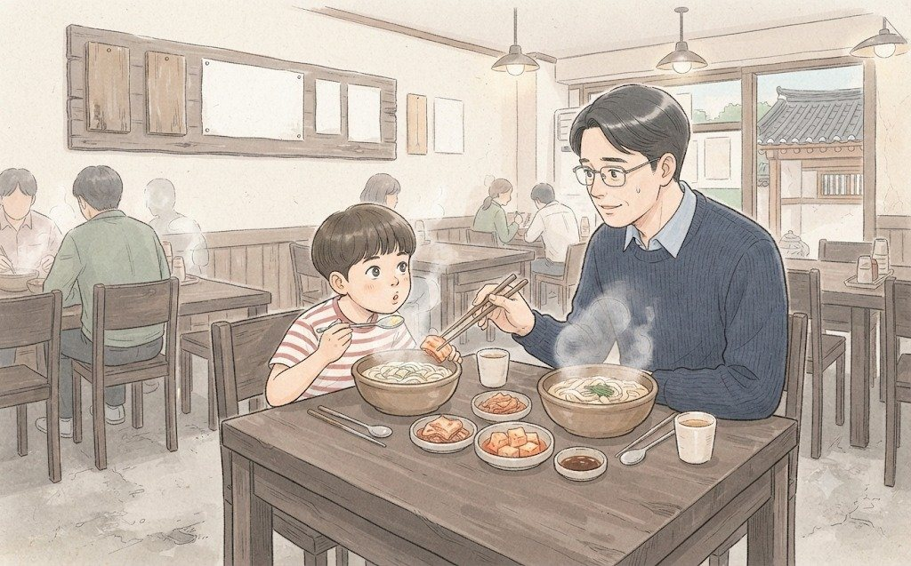

토요일 오전 7시 52분. 대회의실.
진만석 상무가 일어섰다. 해외사업팀장이 토요일 회의에서 직접 발표하는 건 처음이었다. 그의 손에는 출력된 메일 네 통이 들려 있었다.
"사장님. 멕시코 법인에서 작년부터 같은 내용의 메일이 네 번 왔습니다. 제가 네 번 다 받았고, 네 번 다 올리지 않았습니다."
회의실이 조용해졌다. 엄기태 상무가 팔짱을 풀었다. 황인석 대표는 볼펜을 내려놓았다.
"현장의 핑계라고 판단했습니다. 제 판단이 틀렸습니다. 이번에 온라인기획파트가 그 메일을 찾아서 법인과 직접 통화했고, 결제 수단과 배송 문제가 구체적으로 확인됐습니다."
진만석은 메일 뭉치를 테이블 위에 내려놓았다.
"해외사업팀이 4번 받고 안 올렸다는 것, 회의록에 그대로 적어 주십시오."
이우진은 펜을 쥔 채 굳었다. 회의록에 그대로 적어 달라는 말. 3주 전, 그는 '답변 미흡' 네 글자를 지우느라 한나절을 썼다. 지금은 한 임원이 자기 실수를 적어 달라고 하고 있었다.
문혜경은 메일 뭉치를 집어 들었다. 형광펜 자국을 하나씩 넘겨 봤다.
"진 상무. 다 읽으셨네요."
"네."
"읽고도 안 올린 거네요."
"...네."
"그게 모르고 안 올린 것보다 나빠요. 알죠?"
"압니다."
문혜경은 메일 뭉치를 내려놓았다. 그리고 회의실을 둘러봤다.
"그래서, 이걸 고치려면 뭐가 필요해요? 돈? 사람? 시간?"
진만석이 대답하기 전에 권재혁이 먼저 손을 들었다.
"사장님. 그 건은 온라인전략사업팀이 맡겠습니다."
토요일 오전 9시. 28층 대표실.
황인석 대표의 책상 위에 한 장짜리 문서가 놓였다. 권재혁이 직접 쓴 것이었다.

'신흥 시장 온라인 개선 - 인도네시아·멕시코 집중 투자안.'
예산 항목이 세 줄이었다. 현지 결제 수단 연동, 지방 창고 계약, 현지 콘텐츠 제작. 합계 금액을 본 황인석이 안경을 벗었다.
"권 상무. 이거 해외사업팀 올해 마케팅 예산의 절반이에요."
"압니다."
"해외사업팀 예산을 온라인팀이 쓰겠다는 거예요?"
"해외사업팀 예산을 해외 고객한테 쓰겠다는 겁니다. 집행은 저희가 하고, 성과는 법인과 해외사업팀에 같이 잡히게 하겠습니다."
황인석은 문서를 내려놓았다. 그리고 의자에 등을 기댔다.
"근거는요? 멕시코 매니저 메일 한 통으로 이 돈을 쓸 수는 없어요."
"메일 네 통입니다. 그리고 최윤아 과장이 정리한 현지 결제 데이터, 인도네시아 법인 아유 레스타리 매니저의 고객 문의 분석. 첨부했습니다."
"그래도 신흥 시장은 리스크가 커요. 실패하면?"
권재혁은 잠깐 말이 없었다. 그리고 문서 맨 아래, 아직 아무것도 적히지 않은 칸을 가리켰다.
"6개월 주십시오. 6개월 안에 두 나라 모두 온라인 매출 전년 대비 30% 이상 성장. 못 하면 제가 책임지겠습니다."
"책임이라는 게 뭐예요?"
"제 자리입니다."
대표실 밖, 비서석 옆 대기 의자에 한지석이 앉아 있었다. 권재혁이 결재를 받고 나올 때까지 기다리라고 해서 온 자리였다. 문은 닫혀 있었다. 하지만 벽은 생각보다 얇았다.
'제 자리입니다.'
한지석은 그 말을 들었다. 차미정 비서도 들었다. 그녀는 모니터에서 눈을 떼지 않은 채 아주 작게 한숨을 쉬었다. 스물아홉 살. 대표실 비서 6년차. 대표실 문 너머에서 오가는 말을 가장 많이 들은 사람.
"차장님. 커피 드릴까요?"
"아니요, 괜찮습니다."
"그럼 물이라도요."
차미정이 생수 한 병을 내밀었다. 상온이었다. 한지석은 그게 양은주 과장의 원칙이라는 걸 알았다. 사장실과 대표실의 비서들은 서로의 원칙을 공유하고 있었다.
"차장님."
"네."
"저 6년 동안, 대표님 방에서 '제 자리'라는 말 나온 거 세 번 들었어요."
한지석은 그녀를 봤다.
"앞의 두 분은 지금 회사에 안 계세요."
문이 열렸다. 권재혁이 나왔다. 손에 결재된 문서가 들려 있었다. 서명이 있었다. 그리고 문서 맨 아래 빈칸에, 황인석의 글씨로 한 줄이 추가되어 있었다.
'2021.10.31 성과 점검. 미달 시 조직 재검토.'
오전 9시 40분. 28층 엘리베이터.
한지석은 권재혁을 따라 엘리베이터에 탔다. 다른 사람은 타지 않았다. 권재혁이 먼저 닫힘 버튼을 눌렀다. 29층까지 한 층. 좁은 철제 상자 안에 두 사람의 숨소리만 있었다.
"상무님."
"들었죠?"
"...네."
"벽이 얇네요, 그 방."
엘리베이터가 29층에 섰다. 문이 열렸지만 권재혁은 내리지 않았다. 열림 버튼을 누른 채였다.
"왜 그러셨어요? 6개월에 30%면, 인도네시아는 결제 연동만 3개월이 걸려요. 노 부장님 말로는요."
"알아요."
"아시는데요?"
"한 차장. 내가 6개월이라고 안 하면, 대표님은 1년을 줬을 거예요. 1년이면 사람들이 천천히 해요. 사업부도, 해외사업팀도, 우리 팀도. 천천히 하는 동안 소다랩은 인도네시아에서 우리 자리를 다 가져가요."
"그래도 자리를 거실 필요는..."
"자리 말고 걸 게 없어요. 나는 이 회사에 2년 있었어요. 외부에서 왔고. 내가 가진 건 그 의자 하나예요."
권재혁이 엘리베이터에서 내렸다. 한지석은 따라 내리지 않고 그 자리에 서 있었다.
"상무님. 그 의자에 앉아 계신 분이 바뀌면, 저희도 바뀝니다."
권재혁이 엘리베이터 홀에서 돌아봤다.
"그래서 한 차장이 할 일이 있어요."
"뭔데요."
"내가 그 의자에 없어도 이 팀이 돌아가게 만드는 거. 지난주에 보고서 셋으로 나눈 거, 그게 시작이에요."
권재혁은 사무실 쪽으로 몸을 돌렸다. 29층의 형광등 불빛이 엘리베이터 안까지 쏟아져 들어왔다.

"그리고 한 차장."
"네."
"오늘 들은 거, 백 부장한테는 말하지 마요. 그 사람은 알면 또 혼자 술 마시러 가요."
권재혁은 사무실로 걸어갔다. 한지석은 닫히기 시작하는 엘리베이터 문을 손으로 막고 한참 그 뒷모습을 봤다.
토요일 오후 1시. 서촌 칼국숫집 「인왕손칼국수」.
한지석은 아들 도윤과 마주 앉아 있었다. 토요일 회의가 끝난 뒤 처음으로 아들과 점심을 먹는 날이었다. 아내 임수진은 학교 연수가 있어 오지 못했다.
"아빠, 오늘은 회사 안 가?"
"갔다 왔어."
"아침에?"
"응. 도윤이 자고 있을 때."
도윤은 칼국수를 후후 불며 아빠를 봤다. 아홉 살. 요즘 부쩍 질문이 많아진 나이.
"아빠는 회사에서 뭐가 제일 무서워?"

한지석은 젓가락을 멈췄다. 몇 시간 전 엘리베이터에서 들은 말이 떠올랐다. 제 자리입니다.
"아빠가 좋아하는 사람이, 아빠 때문에 다칠까 봐."
도윤은 그 대답을 잘 이해하지 못한 얼굴이었다. 그러다 고개를 끄덕였다.
"그럼 아빠가 지켜 주면 되잖아."
한지석은 웃었다. 그리고 아들의 그릇에 자기 김치를 덜어 주었다.
"그래. 그러면 되지."
그는 그 말이 얼마나 어려운 말인지, 아홉 살 아들에게 설명하지 않았다.
(EP21 끝)